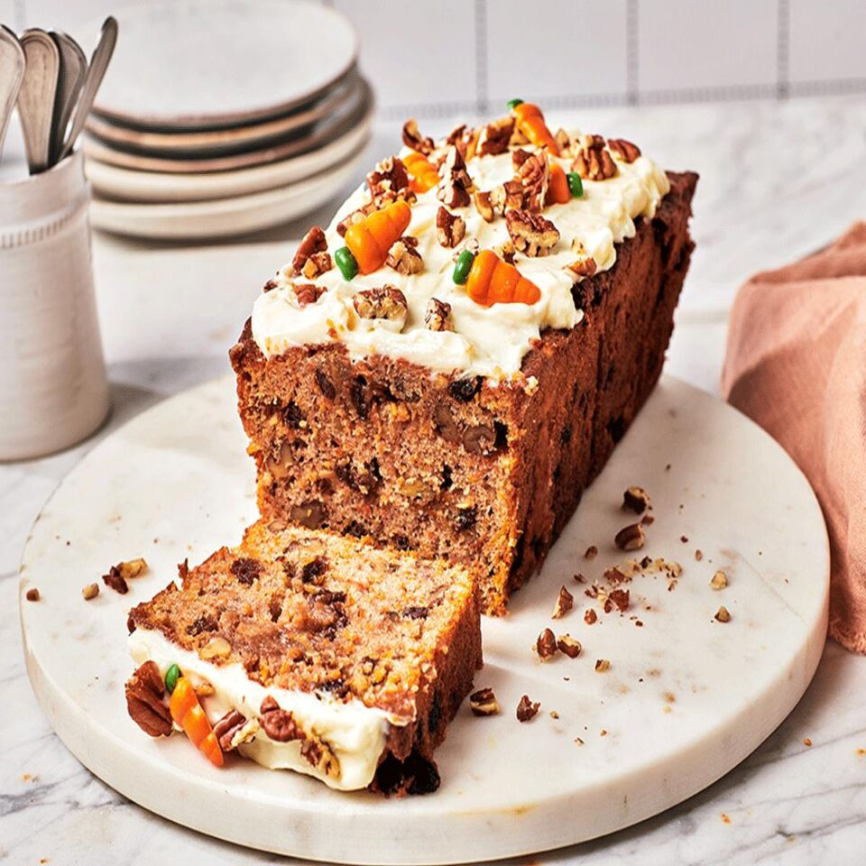
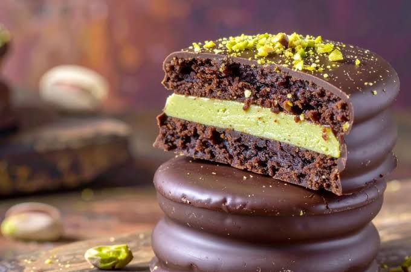
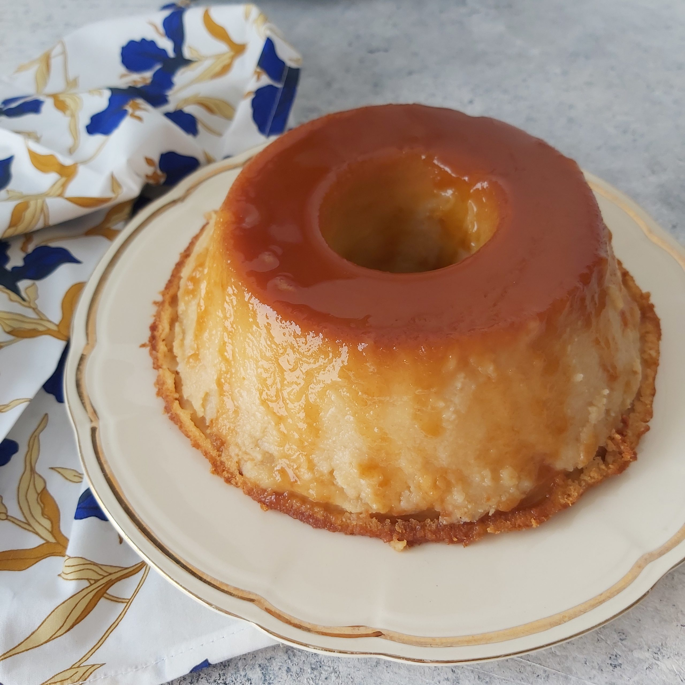
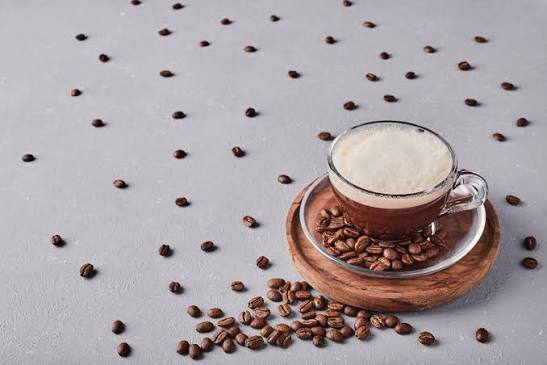

Carrot Cake
Una torta hecha a base de zanahoria, crema y chantilli.
$ 250
La historia de Café Heraldo comenzó en 1987, cuando Ernesto y su esposa Clara decidieron abrir una pequeña cafetería a pocas cuadras del puerto de Mar del Plata. Ernesto era pescador, pero siempre había soñado con tener un lugar donde la gente pudiera refugiarse del frío y compartir una buena charla frente a una taza de café. Con apenas seis mesas, una vieja máquina de espresso y las recetas de tortas caseras de Clara, el local empezó a ganarse el corazón de los vecinos. Pronto se convirtió en una parada obligada para los pescadores que volvían al amanecer, los trabajadores del puerto y los primeros turistas que descubrían aquel rincón escondido.
Casi cuarenta años después, Heraldo sigue en pie, ahora atendida por Lucía, la nieta de sus fundadores, que decidió renovar el espacio sin perder su esencia. Las paredes conservan fotografías antiguas de la ciudad, el aroma a café recién molido se mezcla con el de las medialunas calientes y, junto a la ventana, todavía está la primera mesa que compraron sus abuelos. Para Lucía, la cafetería es mucho más que un negocio: es una forma de mantener viva la historia de su familia y de una ciudad que cambia con cada temporada, pero que siempre encuentra un momento para sentarse, mirar el mar y disfrutar de un buen café.

Una torta hecha a base de zanahoria, crema y chantilli.
$ 250

Alfajor de corteza blanca, relleno de pistacho y dulce de leche.
$ 350

Leche, caramelo, pan y azucar.
$ 450

Mitad cafe mitad leche
$ 25

Leche y tres gotas de cafe
$ 35

Leche, canela, chocolate y cafe
$ 45